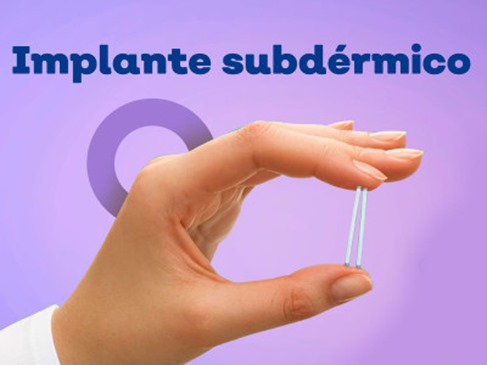
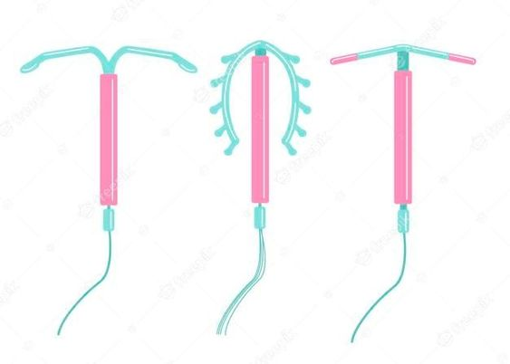
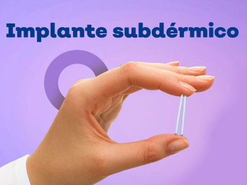
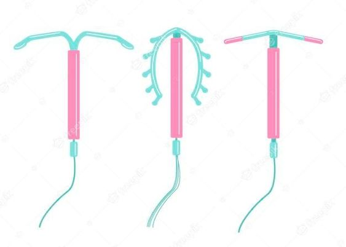

MÉTODOS ANTICONCEPTIVOS
¿Qué son los métodos anticonceptivos?
Los métodos anticonceptivos son formas seguras y efectivas para prevenir un embarazo si decides tener relaciones sexuales. Existen muchas opciones diferentes, como la píldora, el condón, el parche, el anillo vaginal, el DIU (un pequeño dispositivo que se coloca dentro del útero) y el implante (una varilla pequeña que se coloca debajo de la piel del brazo).
Cada método tiene sus propias ventajas y desventajas, así que es importante hablar con un médico o enfermera para encontrar el que mejor se adapte a tu cuerpo y estilo de vida. Recuerda que usar un método anticonceptivo es una decisión personal, y tienes todo el derecho a informarte y tomar la mejor elección para ti.
Los métodos anticonceptivos son súper importantes porque te dan el control sobre tu cuerpo y tu vida. Al usar un método anticonceptivo, puedes decidir cuándo quieres tener hijos y disfrutar de tu sexualidad de manera más segura. Además, te ayudan a prevenir embarazos no planeados, lo que puede traer grandes cambios a tu vida.
 


